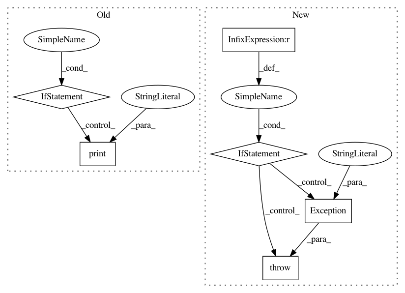

9df6c7659dc2a4c51367ffcf5dabb898ca87cd2c,mltsp/custom_feature_tools.py,,verify_new_script,#Any#Any#,604
Before Change
features_already_known_list = assemble_test_data()
all_extracted_features_list = []
if docker_images_available():
print("Extracting features inside docker container...")
all_extracted_features_list = docker_extract_features(
script_fpath=script_fpath,
features_already_known_list=features_already_known_list)
else:
print("Docker not installed - running custom features script could be "
"unsafe. Skipping generation of custom features.")
return []
return all_extracted_features_list
def list_features_provided(script_fpath):
After Change
features_already_known_list = assemble_test_data()
all_extracted_features_list = []
if docker_images_available() and not os.getenv("MLTSP_NO_DOCKER_TEST") == "1":
print("Extracting features inside docker container...")
all_extracted_features_list = docker_extract_features(
script_fpath=script_fpath,
features_already_known_list=features_already_known_list)
elif os.getenv("MLTSP_NO_DOCKER_TEST") == "1":
print("WARNING - generating custom features WITHOUT docker container...")
all_extracted_features_list = execute_functions_in_order(
features_already_known=features_already_known_list,
script_fpath=script_fpath)
elif not docker_images_available():
raise Exception("Docker image not available.")
return all_extracted_features_list
def list_features_provided(script_fpath):
In pattern: SUPERPATTERN
Frequency: 3
Non-data size: 6
Instances
Project Name: cesium-ml/cesium
Commit Name: 9df6c7659dc2a4c51367ffcf5dabb898ca87cd2c
Time: 2015-09-10
Author: a.crellinquick@gmail.com
File Name: mltsp/custom_feature_tools.py
Class Name:
Method Name: verify_new_script
Project Name: deepfakes/faceswap
Commit Name: f16ea566f0565e7fb1eee3477e66e51c3ba87b1c
Time: 2018-04-04
Author: 36920800+torzdf@users.noreply.github.com
File Name: tools/sort.py
Class Name:
Method Name:
Project Name: TheAlgorithms/Python
Commit Name: 023f5e092d38f7e220ae68a23f7183eeb8fd9e04
Time: 2019-05-22
Author: vargasnikolass@gmail.com
File Name: sorts/bucket_sort.py
Class Name:
Method Name: bucket_sort